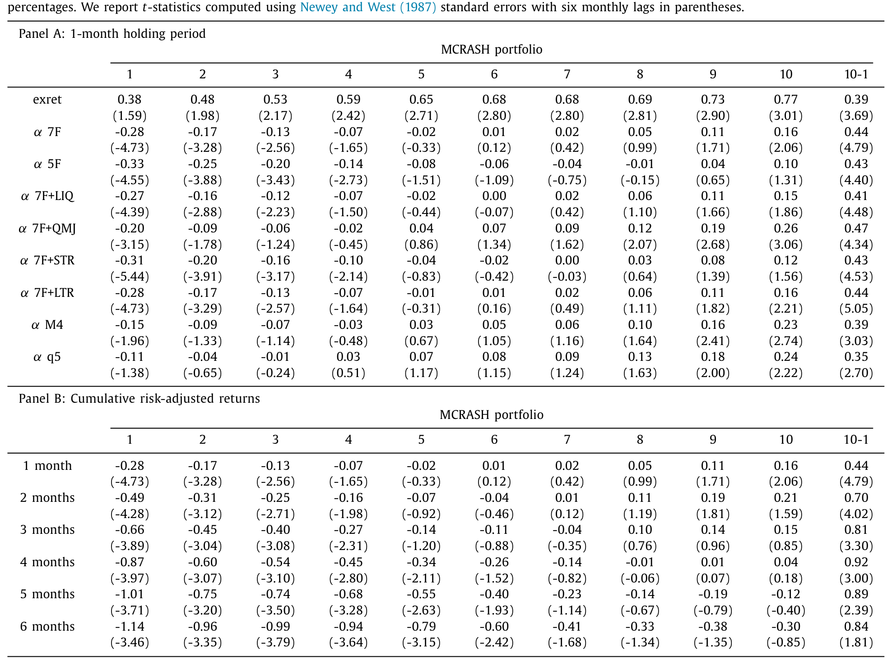
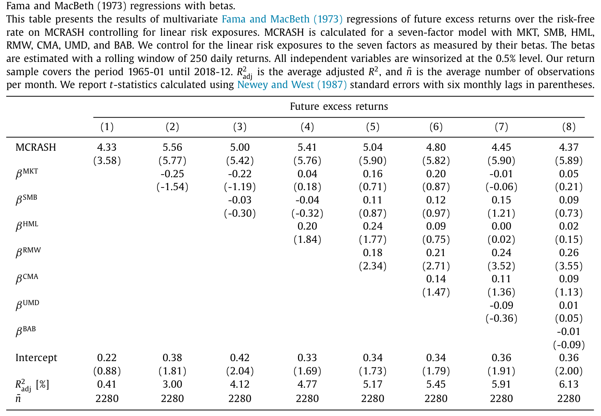
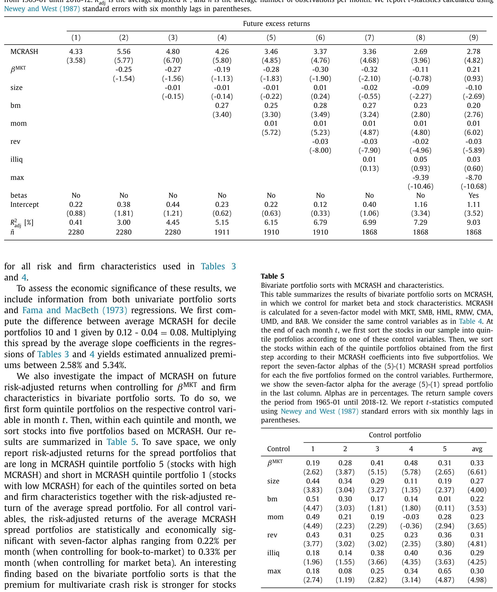
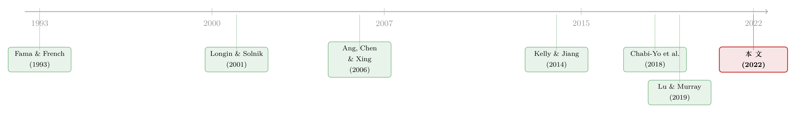

因子动物园之外，那种没人定价的「一起崩」
本文读的是 Chabi-Yo, Huggenberger & Weigert (2022, JFE)：作者把「崩盘风险」从「只跟市场一起崩」扩展到「跟任意一个系统性因子一起崩」，提出一个叫 MCRASH 的新度量。结果是——高 MCRASH 的股票，未来一年比低 MCRASH 的股票多赚约 4.68%（风险调整后 5.28%，t≈4.79）；而这件事，居然不需要往本已拥挤的「因子动物园」里再塞一个新因子。
1 引言：动物园已经够挤了
过去二十年，资产定价的「因子动物园 (factor zoo)」越长越大。每隔一阵，就有人端出一个新变量，号称能解释横截面收益。学界为此头疼已久——到底哪些因子是真的，哪些只是数据挖掘的产物？（关于这场旷日持久的争论，可参见《弱替代：因子动物园是从哪里冒出来的？》与《压缩横截面：因子动物园的尽头，不是更少的因子，而是更聪明的收缩》。）
在动物园的一个角落里，住着一类专门研究「下行风险 (downside risk)」与「崩盘风险 (crash risk)」的因子。它们的逻辑很朴素：投资者怕的不是波动，而是「一起跌」——当市场崩盘时，你手里的股票也跟着崩，那才最要命。于是有了下行 beta、尾部 beta、下尾相依 (lower tail dependence, LTD)、bear beta 等一系列度量。
但这里藏着一个被所有人默认、却几乎没人质疑的假设：所有这些「崩盘」度量，都只用「市场」这一个因子来定义什么叫「崩」。
这就奇怪了。自 Fama and French (1993) 以来，整个行业都接受一个事实：随机贴现因子 (stochastic discount factor, SDF) 不可能只由市场张成，它还依赖规模、价值、盈利、投资、动量等一堆非市场因子。既然定价的「内核」依赖这么多因子，凭什么我们只担心「跟市场一起崩」，却对「跟价值因子一起崩」「跟动量因子一起崩」视而不见？
这就是本文的张力所在。
2 一个直觉：三只股票，两次崩盘
作者先用一张图把直觉讲透。设想有两个因子 A（市场）和 B（某个非市场因子），各自经历过一次大跌；再设想三只股票：
- 股票 1：A 崩的时候它也崩，B 崩的时候它没事；
- 股票 2：恰好相反，只在 B 崩时一起崩；
- 股票 3：A、B 谁崩它都跟着崩。
这三只股票的「单变量崩盘风险」是一样的——各自都经历了两次幅度相当的大跌。但如果你只用「跟市场（因子 A）一起崩」来衡量系统性崩盘风险，你会得到一个荒谬的结论：股票 1 和股票 3 风险相同，而股票 2 的系统性崩盘风险为零。
可股票 2 明明会在 B 崩时受伤。一个真正在乎多个因子尾部事件的投资者，凭什么对它毫无要求？而股票 3 同时暴露在两次崩盘里，它显然该要求最高的崩盘溢价。
于是一个自然的问题浮出水面：有没有一个度量，能把「跟任意一个系统性因子一起崩」的风险，一次性装进去？
3 识别的核心：MCRASH 是什么
这正是本文的核心建构。先定义「尾部事件」：对任意收益 \(Y\)，固定一个小概率 \(p\)，把落在 \(p\)-分位数及以下的实现值称为它的崩盘，
$$T_p[Y] := \{\, Y \le Q_p[Y]\,\}$$
把这个定义从单变量推广到 \(N\) 个因子 \(X=(X_1,\dots,X_N)\)，作者定义「多变量系统性尾部事件」为——至少有一个因子落入自己的左尾：
$$T_p[X] := \bigcup_{j=1}^{N} T_p[X_j] = \bigcup_{j=1}^{N}\{\, X_j \le Q_p[X_j]\,\}$$
注意这个「并集 \(\bigcup\)」是全文的灵魂。它说的不是「所有因子同时崩」，而是「哪怕只崩了一个」。有了它，多变量崩盘风险 (multivariate crash risk, MCRASH) 就是一个条件概率：在「至少一个因子崩」的前提下，这只股票自己也崩的概率，
$$MCRASH_i^X := P\!\left[\, T_p[R_i] \,\big|\, T_p[X]\,\right] = P\!\left(\, R_i \le Q_p[R_i] \,\Big|\, \bigcup_{j=1}^{N}\{X_j \le Q_p[X_j]\}\,\right)$$
几个性质值得停下来体会：
第一，它是下尾相依的自然推广。 当 \(N=1\)、唯一的因子就是市场时，MCRASH 退化成股票与市场之间的下尾相依——也就是 Chabi-Yo et al. (2018) 用的那个 LTD。所以 MCRASH 不是另起炉灶，而是把一个已经被验证有效的双变量度量，沿着「因子维度」拉开。
第二，它只跟「相依结构」有关，跟边际分布无关。 因为用的是分位数阈值，作者证明 MCRASH 完全由随机向量 \((R_i, X_1,\dots,X_N)\) 的 copula（连接函数）决定。这意味着 MCRASH 在构造上就与波动率、偏度、VaR、期望损失这些「单变量」风险指标正交——它捕捉的是别的东西。事后的数据也印证了这一点：MCRASH 与各种因子 beta、公司特征的横截面相关性最高也只有 0.28（出现在市场 beta 上），其余都更低。
第三，它介于 0 和 1 之间，干净利落。 实测中 MCRASH 的取值在 0 到 0.17 之间，均值 0.08。
4 模型：为什么「凸的 SDF」会给崩盘付钱
但真正关键的一步，是把这个统计度量和「溢价」挂上钩——凭什么高 MCRASH 就该有更高的预期收益？这就要回到 SDF 上。
标准做法是这样的。任何无套利的非负 SDF \(M\) 满足 \(E[M(1+R_i)]=1\)。如果 \(M\) 能被一组因子 \(X\) 张成，我们就用它在因子上的投影 \(M^X=E[M\mid X]=m(X)\) 来定价，得到那个人人熟悉的结果：
$$E\!\left[R_i - R_f\right] = -(1+R_f)\,\mathrm{cov}\!\left[m(X),\, R_i\right]$$
接下来，教科书的套路是把 \(m(X)\) 在均值 \(x_c=E[X]\) 处做一阶泰勒展开，得到一个线性近似：
$$m^L(X) = m(x_c) + \nabla' m(x_c)\cdot (X - x_c)$$
代回去，就长出了我们熟悉的「线性因子 beta」分解。换句话说，所有的线性多因子模型，本质上都是「把真实的 SDF 用一条切线去近似」。
切线近似有个致命弱点：它只在均值附近准。一旦因子实现值跑到很远的地方——也就是落入左尾 \(T_p[X]\)——这条切线就会偏得离谱。而这恰恰是崩盘发生的地方。
作者的关键动作，就是给这条切线打一个尾部补丁，提出一个分段线性 (piecewise linear) 的近似：
直觉是这样的：如果 \(m\) 是因子收益的凸函数 (convex function)，那么真实的 SDF 在尾部会高于它的切线（凸函数永远在切线之上）。也就是说，在崩盘状态里，代表性投资者的边际效用，比线性模型以为的还要高。
于是反转出现了：一只在「联合崩盘」时跌得最狠的股票（高 MCRASH），恰恰在 SDF 被「凸性」顶起来的那些状态里给你最差的回报。它和 SDF 正相关，是不折不扣的「坏」资产，理性投资者当然要求补偿。把这层逻辑代进定价方程，就能推出一个标准线性模型的扩展——预期超额收益里，多出一项正比于 MCRASH 的溢价。
这一节的妙处在于：MCRASH 溢价不是一个新因子，而是对已有因子的一种非线性（尾部）暴露。所以它能改进定价，却不必把动物园再撑大一圈。这正是标题「without further expanding the factor zoo」的含义。
5 数据与估计
理论说完，来看怎么落地。
- 样本：1964–2018 年，在 NYSE/Amex/Nasdaq 上市的美国普通股，日度收益。
- 因子：基准用一个七因子模型——在 Fama and French (1993, 2015) 的基础上，加上 Carhart (1997) 的动量因子 UMD 和 Frazzini and Pedersen (2014) 的 BAB（betting-against-beta）。具体是 MKT、SMB、HML、RMW、CMA、UMD、BAB。
- 估计：每月、每只股票滚动估一次 MCRASH。基准设定取 \(p=5\%\)，用 250 个交易日（约一年）的滚动窗口。方法是半参数 (semiparametric) 的：用 GARCH 模型刻画股票和因子各自的边际分布（吸收波动率聚集），再用非参数方法估计它们之间的相依结构——这样既不假装尾部相依是线性的，也不强加某种 copula 形式。
6 主要结果：高 MCRASH，高未来收益
先看最直观的等权单变量分组。把股票按月末 MCRASH 从低到高分成 10 组，下个月的超额收益单调递增。最高组（第 10 组）减最低组（第 1 组）的收益差，年化达 4.68%，t 值 3.69，在 1% 水平显著。
更有意思的是，当你把这个 10–1 价差对市场以及 SMB、HML、RMW、CMA、UMD、BAB 做风险调整后，它不但没缩水，反而涨到了年化 5.28%，t 值 4.79。也就是说，剔除掉对这些因子的线性暴露，MCRASH 的效应更干净、更强了——这正是「它捕捉的是非线性尾部暴露」的直接证据。

Table 2
多变量检验也讲同一个故事。Fama and MacBeth (1973) 回归里，把 \(t+1\) 月的超额收益对 \(t\) 月的 MCRASH 回归，同时控制各种因子 beta 和公司特征（规模、账面市值比、动量、反转、流动性、当月最大日收益）。在「塞进全部因子 beta」、与理论中那个扩展线性模型相匹配的设定里，MCRASH 的系数估计是 4.37，t 值高达 5.89。跨所有设定，系数落在 2.69 到 5.56 之间，t 值在 3.58 到 6.70 之间。
考虑到第 10 组与第 1 组之间 MCRASH 的差距约为 0.08，这些系数翻译成年化溢价大约是 2.58% 到 5.34%——和分组法给出的量级彼此印证。

Table 3
而且效应有持续性：MCRASH 对收益的影响不止管一个月，对风险调整后的累计收益一直延伸到 \(t+6\) 月仍然显著。
7 它不是已知风险的「马甲」
到这里，一个怀疑论者一定会问：这会不会只是某个已知下行风险因子换了个名字？作者花了大力气回应。
他们把 MCRASH 逐一对下列度量做「赛马」：下行 beta（Ang, Chen, Xing 2006）、尾部 beta（Kelly and Jiang 2014）、特质波动率与特质偏度（Ang et al. 2006）、协偏度与协峰度（Harvey and Siddique 2000）、VaR（Atilgan et al. 2020）、以及 bear beta（Lu and Murray 2019）。无论是多变量回归还是双重分组，MCRASH 的效应都稳健地活了下来。

Table 4
反过来才更耐人寻味：当作者把 MCRASH（以及公司特征）放进回归后，那些只盯着市场的双变量崩盘度量——市场、规模、盈利因子的——反而都不显著了。这强烈暗示，「跟市场一起崩」只是「跟某个因子一起崩」的一个特例；一旦你用 MCRASH 把整张因子表都纳进来，单看市场的那套度量就被吸收了。
稳健性上，作者还做了样本期切分（1965–1991 与 1992–2018 分别检验）、改变尾部阈值、换用 49 个行业组合作检验资产、市值加权分组等。一个诚实的边界是：在包含全部股票的市值加权分组里，风险调整后的 10–1 价差降到年化 1.92%，t 值 1.39——不显著。但只要剔除横截面里最大的 1% 股票，显著性就回来了。换句话说，除了那批超级大盘股，MCRASH 在哪儿都成立。
最后，作者还把单纯的「并集」崩盘换成「交集」崩盘——定义了一个 JCRASH（多个因子同时崩时股票一起崩的条件概率），用全参数 copula 估计。发现 MKT&SMB、MKT&RMW 这两对因子的联合崩盘，溢价最显著，且在控制 MCRASH 后依然稳健。
8 文献脉络
把这篇论文放回它生长的那条藤蔓上，脉络相当清晰。
源头是 Roy (1952) 与 Markowitz (1959) 的「安全第一」思想——投资者真正怕的是亏损，而非波动。沿着这条线，Ang, Chen and Xing (2006) 证明下行 beta 带正溢价，把「下行风险定价」做实。接着，研究的焦点从「下行」推进到「极端」：Kelly and Jiang (2014) 发现暴露于时变尾部风险因子的股票有更高收益；Chabi-Yo et al. (2018) 则证明股票与市场的下尾相依（LTD）带正溢价，并被 Weigert (2016) 在 40 国样本里证实。与此同时，Longin and Solnik (2001)、Poon et al. (2004) 把极值理论与 copula 引入金融，为「非线性相依」打好了工具基础。

然后，一个自然的问题是：所有这些尾部度量，为什么只用市场来定义崩盘？van Oordt and Zhou (2016) 发现尾部 beta 能预测崩盘期表现却不带溢价；Lu and Murray (2019) 用 S&P 500 期权里的 bear beta 捕捉市场崩盘概率——但它们仍然是「市场单因子」的世界。本文站的位置，正是把这条「下行/崩盘风险」的主线，第一次系统地从「双变量（与市场）」推到「多变量（与任意因子）」，并给出了相应的 SDF 理论。
评论与延伸（Q&A + 研究方向）
(a) 几个可能的疑问
Q：MCRASH 和「下尾相依（LTD）」到底差在哪？
差在「维度」。LTD 是股票与单个因子（通常是市场）之间的双变量下尾相依。MCRASH 把条件事件换成「至少一个因子崩」的并集，是 LTD 沿因子维度的推广；当只留市场这一个因子时，MCRASH 精确退化回 LTD。
Q：用「并集（至少一个崩）」而不是「交集（同时崩）」，会不会把概念稀释了？
这是有意的设计。「同时崩」（即 JCRASH）发生得太罕见，估计噪声大、可用样本少，作者只敢在因子对上估它。而「至少一个崩」既覆盖了单因子崩、也覆盖了联合崩，是个更稳、更一般的定义。作者把 JCRASH 单列在第 5 节作为补充，正说明二者是互补而非替代。
Q：风险调整之后价差不降反升，是不是哪里出了问题？
恰恰相反，这是核心证据。MCRASH 度量的是对因子的非线性尾部暴露，与因子的线性暴露（beta）正交。剔除线性暴露，等于把混在里面的「线性噪声」洗掉，留下更纯的非线性信号——所以价差变大，逻辑自洽。
Q：市值加权全样本里 t 值只有 1.39，是不是说这溢价主要是小盘股的故事？
一半对一半。作者坦承全样本市值加权下不显著，但只要剔除最大的 1% 股票，显著性立刻恢复。结论应是「除超级大盘股外普遍成立」，而非「只是微盘垃圾股」——毕竟剔的只是 1%。
Q：MCRASH 会不会只是 MAX（彩票偏好）或特质偏度的另一种写法？
不会。MAX、特质偏度都是单变量特征，而 MCRASH 由 copula 决定、在构造上独立于边际分布。回归里同时控制了当月最大日收益和特质偏度，MCRASH 依然显著。
Q：凭什么相信 SDF 是「凸」的？
这是把溢价符号钉死的关键假设，也确实是一个需要的条件，而非凭空成立。它对应代表性投资者效用函数的三阶导数为正（即审慎/prudence），与 Harvey and Siddique (2000) 在单因子下用凸 SDF 解释协偏度溢价同源。作者也指出，配合额外的尾部相关近似项，凸性约束可以适当放松。
(b) 几个可能的研究问题与提案
1. 把 MCRASH 搬进公司债横截面。
【经济故事】公司债的尾部风险天然是多维的——违约因子（DEF）、期限因子（TERM）、流动性因子可能各自崩、也可能一起崩。一只债券对「任意一个崩」的暴露，理应索取信用尾部溢价。【可行性】中。数据用 TRACE 日度（或周度）交易价 + 公司债因子；难点是债券交易稀疏，需要先把 MCRASH 的滚动窗口和 GARCH 边际换成适配低频、含零交易日的估计。识别上可沿用本文的 Fama-MacBeth + 双重分组框架，doable。
2. 外资持有人与多变量崩盘暴露。
【经济故事】外资持仓往往在全球性冲击中同步撤离，可能同时点燃多个因子的左尾。若外资重仓的股票/债券有系统性更高的 MCRASH，就为「外资是崩盘风险的搬运工」提供了直接证据。【可行性】中。股票端可用 13F/FactSet 持仓 + 本文 MCRASH；债券端可结合外资持有数据。识别难点在区分「外资导致高 MCRASH」与「外资偏好本就高 MCRASH 的资产」，需借助外生的指数纳入或资本账户事件作工具。
3. MCRASH 溢价里，有多少其实是「流动性一起干涸」？
【经济故事】多因子联合崩盘的时刻，往往也是流动性枯竭的时刻。MCRASH 溢价可能部分是被错贴成「尾部相依」的流动性风险。【可行性】中。把 Amihud (2002) 非流动性、Pástor and Stambaugh (2003) 流动性因子纳入 MCRASH 的因子集合，看市场/规模/盈利因子的 MCRASH 溢价是否被流动性维度吸收。数据现成，识别清晰，doable。
4. JCRASH 与系统性风险监测。
【经济故事】JCRASH（多因子同时崩）天然对应「系统性事件」。把横截面平均 JCRASH 做成时间序列，看它能否提前预警市场层面的崩盘或信用利差跳升。【可行性】中偏低。同时崩事件稀少，时间序列噪声大；需要更长样本或跨国面板（如 Weigert 2016 的 40 国数据）来攒出统计功效。
我的判断
这是一篇「概念干净、执行扎实」的论文。它最漂亮的地方不在哪个具体系数，而在问对了一个所有人都绕过去的问题：既然 SDF 依赖多个因子，崩盘风险就不该只跟市场算账。把双变量下尾相依推广成 copula 决定的多变量度量，再用一个分段线性 SDF 把它和溢价严格挂钩，整条逻辑链既有理论又有实证，且「不扩张动物园」的卖点切中了当下的痛点。
担忧主要有两点。其一是识别更像「定价」而非「因果」：MCRASH 是事后估计的统计量，高 MCRASH 与高收益的关系是横截面相关，作者并未（也很难）提供一个外生冲击来证明投资者「确实在为多变量崩盘要价」，而非两者同被某个遗漏变量驱动。其二是估计的自由度：滚动窗口长度、\(p\) 的取值、GARCH 的设定、参数与非参数的选择，都会影响 MCRASH，虽然作者做了大量稳健性，但「研究者自由度」始终存在。
后续我最想看到的，是把这套「多变量崩盘」逻辑搬到信用市场和外资持有人上——那里的尾部本就是多维的，联合崩盘的代价也更真切。如果 MCRASH 在公司债里同样定价，并且能和外资抛售、流动性枯竭对上号，这个概念的分量会比在股票横截面里重得多。
参考文献
- Ang, A., Chen, J., Xing, Y. (2006). Downside risk. Review of Financial Studies 19(4), 1191–1239.
- Atilgan, Y., Bali, T.G., Demirtas, K.O., Gunaydin, A.D. (2020). Left-tail momentum: underreaction to bad news, costly arbitrage and equity returns. Journal of Financial Economics 135(3), 725–753.
- Bollerslev, T., Patton, A.J., Quaedvlieg, R. (2021). Realized semibetas: disentangling "good" and "bad" downside risks. Journal of Financial Economics, forthcoming.
- Carhart, M.M. (1997). On persistence in mutual fund performance. Journal of Finance 52(1), 57–82.
- Chabi-Yo, F., Ruenzi, S., Weigert, F. (2018). Crash sensitivity and the cross-section of expected stock returns. Journal of Financial and Quantitative Analysis 53(3), 1059–1100.
- Fama, E.F., French, K.R. (1993). Common risk factors in the returns on stocks and bonds. Journal of Financial Economics 33(1), 3–56.
- Fama, E.F., French, K.R. (2015). A five-factor asset pricing model. Journal of Financial Economics 116(1), 1–22.
- Fama, E.F., MacBeth, J.D. (1973). Risk, return, and equilibrium: empirical tests. Journal of Political Economy 81(3), 607–636.
- Frazzini, A., Pedersen, L.H. (2014). Betting against beta. Journal of Financial Economics 111(1), 1–25.
- Harvey, C.R., Siddique, A. (2000). Conditional skewness in asset pricing tests. Journal of Finance 55(3), 1263–1295.
- Kelly, B., Jiang, H. (2014). Tail risk and asset prices. Review of Financial Studies 27(10), 2841–2871.
- Longin, F., Solnik, B. (2001). Extreme correlation of international equity markets. Journal of Finance 56(2), 649–676.
- Lu, Z., Murray, S. (2019). Bear beta. Journal of Financial Economics 131(3), 736–760.
- Markowitz, H. (1959). Portfolio Selection. Yale University Press, New Haven.
- Poon, S.-H., Rockinger, M., Tawn, J. (2004). Extreme value dependence in financial markets: diagnostics, models, and financial implications. Review of Financial Studies 17(2), 581–610.
- Roy, A.D. (1952). Safety first and the holding of assets. Econometrica 20(3), 431–449.
- van Oordt, M.R.C., Zhou, C. (2016). Systematic tail risk. Journal of Financial and Quantitative Analysis 51(2), 685–705.
- Weigert, F. (2016). Crash aversion and the cross-section of expected stock returns worldwide. Review of Asset Pricing Studies 6(1), 135–178.